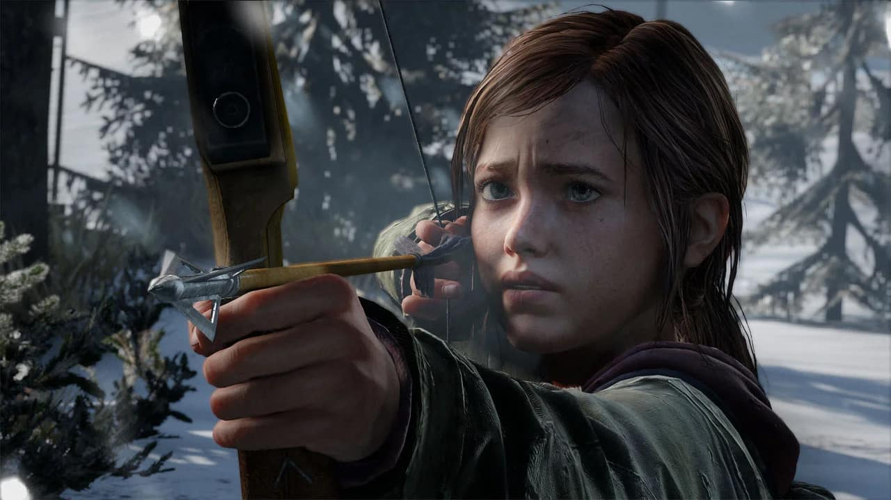
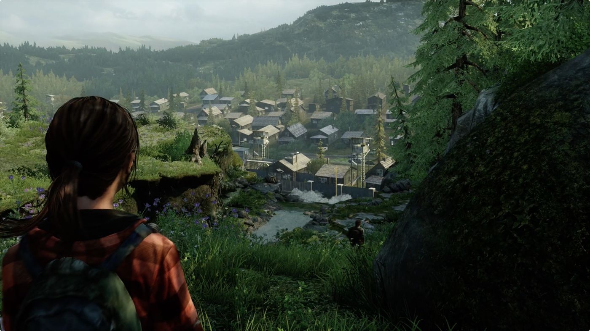

Se 14-ti letou Ellie se poprvé setkáváme v první čtvrtině průběhu prvního dílu, kdy s Joelem dostaneme úkol přepravit malou holku za velkou hromadu zbraní
Tehdy Joel není moc veselý ohledně nově daného úkolu, jelikož mu přijde nebezpečné a zbytečně namáhavé převážet takto slabou a malou holku skrz celou zemí, kde panuje epidemije houby Cordyceps (v realitě houba Coryceps napadá pouze mravence, ve hře napadá i lidi). Jeho odpor ale nakonec překoná jeho společnice Tess, která mu připomíná, kolik vzácných zbraní, jídla a všeho potřebného pro život v tomto světě dostanou.
Vydají se tedy na cestu skrz prvním městem - Bostonem, do cílové destinace - radnice. Cesta je to velice náročná. Během chvíle se Joelova skupina dostane do pasti nepřátelské armády, která dokáže zabít Joelovu společnici Tess a tím i jeho tehdy jedinou motivaci k tomu doručit Ellie tam, kam je určeno. Po této situaci zvolí nové místo kam se Ellie doručí, a to do laboratoře "někde na západě", o které se Ellie zmínila. Mezitím se začne poprvé utvářet mezi postarším Joelem, který na začátku pandemie houby Cordyceps přišel o svojí dceru, pouto, a začne ji brát více jako svojí společnici a později i jako náhradní dceru.
Jelikož Ellie zmiňovaná laboratoř je daleko, rozhodne se Ellie s Joelem najít ve městě auto, kterým by se tam dopravili. Joel se tedy rozhodne zajít za svým starým kamarádem Billem, který mu auto nabídne, pokud splní jeho požadavek, který spočíval ve vyčištění města nakaženými.
V tento moment se začala ukazovat bojácnost a dobrý duch, který Ellie měla v sobě. Ve svých 14 letech jí byla tedy dána zbraň a společně pomáhala zabíjet nepřátele.
Poté co dostanou auto a jedou směrem na západ, jsou ale v Pittsburghu přepadeni skupinou pašeráků a jsou nuceni jít skrz městem pěšky a čelit tak nepřátelům jak v podobě armády, tak pašeráků, tak nakažených. Po cestě potkají společníky jako jsou Henry, kteří ale kvůli nemolisrdnosti tohoto světa zemřou v důsledku pokousání nakaženým. Ke konci kapitoly ve městě jsou kvůli naháněčce s armádou nuceni odejít z města bez jakéhokoliv auta a musí si tedy obsarat jinou cestu do laboratoře. Joel se tedy rozhodne zajít za svým bratrem, který má nedaleko opevněné město, které je jedním z jediných míst, které se drží od nakažených. Háček je v tom, že Joel neviděl svého bratra od té doby, kdy se jejich cesty rozdělily, a to bylo v začátku epidemie (zhruba 20 let ve hře).
Když dorazí do usedlosti, shledají se Joel s jeho dlouho ztraceným bratrem a postupně si domluví, že jim propůjčí koně, aby se mohli rychleji a snadněji dostat do laboratoře.
Potom, co po dlouhé a náročné cestě dorazí do laboratoře, zjistí že všichni členové jsou mrtví. Byli zavraždeni zdejší armádou a celý objekt je hlídaný. Potom co si to uvědomí, že právě vešli do pasti, je však pozdě. Začne na ně nabíhat spousta vojáků a nakonec to dopadne Joelovým probodnutím břicha kusem železa a Ellie je nutna ve svých 14 letech najít pro něj bezpečný úkryt a schánět jídlo, léky a vodu a do toho hlídat, aby těžce zraněného Joela nikdo nedorazil.
V průběhu kapitoly Winter, kdy hrajeme za Ellie, se kterou hlídáme Joela, Ellie najde skupinu kanibalů, kteří se snaží vypadat přátelsky, ale během chvíle zjistí, že jim nejde o nic jiného než o to, aby Ellie s Joelem uvěznili a následně snědli. Ellie jim to nechce věřit a ze začátku se jí daří schovat se, kažedopádně kvůli početní převaze ji najdou a uvězní ji v jejich kempu.
Joel, který už v tu chvíli je schopný bojovat, zjistí že je něco špatně, jelikož se Ellie dlouhou dobu nevracela, a rozhodne se ji najít. Okolo jeho kempu se nachází spousta skupiny kanibalů a díky Joelově efektivní mučící metodě je schopen zjistit místo, kde hlava této skupiny Ellie drží. Poté jí odsud osvobodí na poslední chvíli a společně se vydají na místo, které řekl na nahrávce na kazetě jeden z lidí pracujících v laboratoři, o které mluvila Ellie, a to do nemocnice v Salt Lake City.
Když doraží do nemocnice, konečně se shledají s cílem a předají ji na zkoukání. V nemocnici se zjistí, že Ellie má v mozku speciální mutaci, díky které by se mohla vyrobit vakcína na houbu Cordyceps, která zabijí lidi v tomto světě. Joel se zaraduje, že po 25 letech utrpení lidstva by se mohlo vše vrátit k normálu, ale ví že bude nějaký háček. Ten je pro něj nepřijatelný, jelikož by extrahování této mutace znamenala smrt Ellie, jelikož musí vyjmout její mozek. Důvodem pro odmítání této procedury Joelem bylo to, že během dlouhé cesty skrz USA se vytvořil mezi ním a Ellie stejný vztah, jako měl Joel tehdy se svojí dcerou a bral jí jako svojí náhradní dceru. Zachová se tedy sobecky a místo toho, aby dovolil doktorům výrobu vakcíny a tím i smrt Ellie, tak místo toho se rozhodne Ellie unést z nemocnice, zkazit plány na vakcínu - i když Ellie si přála, aby v případě této situace ji Joel nechal obětovat pro dobro lidstva - a žít s ní život, který si on sám představoval. Během úniku z nemocnice zabije několik dalších doktorů, ale povede se mu na konci utéct. Po cestě zpátky do usedlosti jeho bratra se Ellie probouzí z narkózy a Joel jí jako vysvětlení, proč není v nemocnici řekne, že výroba vakcíny nebyla možná a že jedou zpátky za jeho bratrem Tommym. Tato lež byla pak klíčové události pro příběh druhého dílu.
